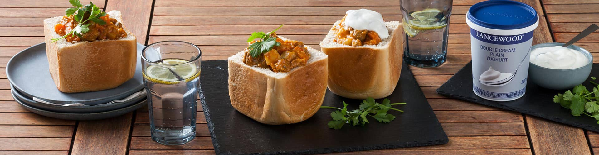

Bunnie Chow Recipe

Description
The Bunnie or Bunnie Chow is a Street Meal Invented in Durban, this treat simple treat which simply consists of a half loaf of hollowed bread and Curry has become on of Durbans Tourists attraction.
I can still remember my first time having a bunnie, It was during Winter Holidays when my Father came back from work and presented me with a plastic, I could already see the bread through the plastic but it was the aroma that the curry gave off that prompted my interest.
I proceeded to tear the plastic open in curiosity until most of it was exposed and soon as I took a bite of the loaf soaked it curry, I was hooked
So for humanitarian deed (lol) I have created added a recipe for this Delcious treat. Enjoy
Ingredients
- 1 loaf bread, white, unsliced, flat-topped
- 1 star anise
- 1 cinnamon stick
- 3 whole cardamom pods
- 1⁄2 teaspoon cumin seed
- 1⁄2 teaspoon cumin seed
- 1⁄2 cup oil
- 1 onion, chopped
- 3 tablespoons garam masala
- 1 teaspoon ground coriander (seeds)
- 1 teaspoon hot ground pepper (like cayenne)
- 2 teaspoons turmeric
- 2 tomatoes, medium, chopped/li>
- 2 lbs leg of lamb, in cubes (or beef)
- 4 garlic cloves, finely chopped
- 2 teaspoons ground ginger
- 6 curry leaves
- 2 potatoes, large, in cubes
Steps
- Fry all the ingredients listed under "Whole Spices" until the onion is glassy.
- Add the list called "Fine Spices". Lingela says: "Stir and fry until the spices stick to the bottom of the pot. If you have a good Teflon-coated pot, go and buy a cheap one first.".
- Now add the tomatoes, and stir until everything sticking to the pot bottom comes loose.
- Add the meat, ginger, garlic and curry leaves.
- Simmer for half an hour or more, until the meat is almost tender, then add a little water and the potato cubes.
- Simmer until meat is tender.
- The bread
- It should be the unsliced rectagular loaf with the flat top, known in South Africa as a "Government sandwich loaf".
- You could cut the bread across into two, three or four even chunks, depending on how hungry the eaters will be.
- Whatever you decide, with a sharp knife cut out most of the soft white bread, leaving a thick wall and bottom. Keep the bread you removed.
- Ladle the curry into the hollows, and then put back on top the bread you removed. You could use this bread to help eat the curry, as "this is ALWAYS eaten with the hands"
- (Actually, any kind of curry goes into a bunny chow. It depends on the cook and your tastes!).
Home